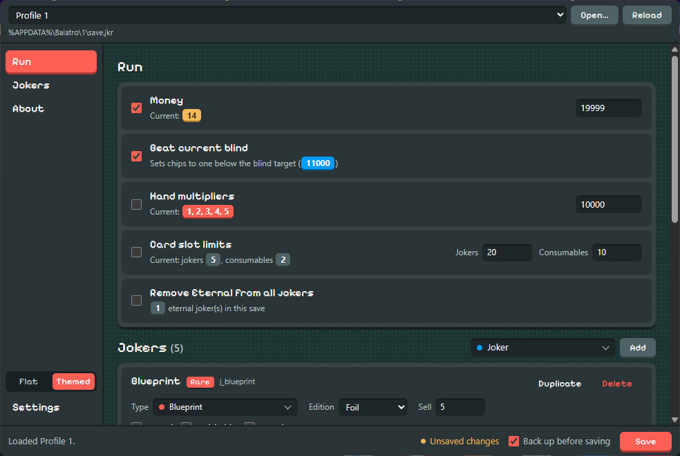
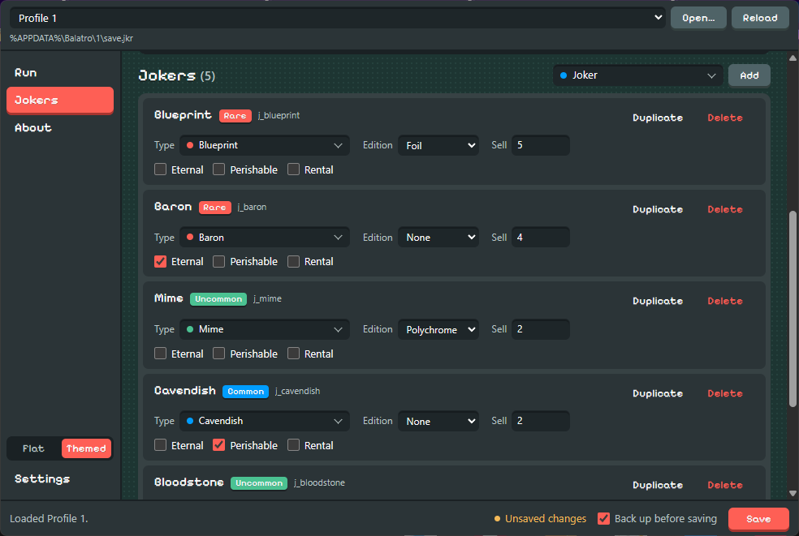

Balatro Save Editor
Edit your current Balatro run: money, the blind you're on, hand mult, slot limits and every joker you're holding. Your save is backed up first and checked after every write.

What you can change
Set your dollars to any amount.
Puts your chips one short of the current blind, so any hand clears it.
Sets the mult for every poker hand at once.
Raise how many jokers and consumables you can hold.
Strips the Eternal sticker so those jokers can be sold or destroyed again.
Change any joker's type, edition, stickers and sell value. Add, duplicate or delete jokers.

Nothing is written until you hit Save
Tick the changes you want, edit your jokers, then save once. Close Balatro first — the game rewrites
save.jkr while it runs and can overwrite your edits.
Backed up
By default, a timestamped .bak copy is written next to your save before anything changes.
Checked
After writing, the file is read back and parsed again. If it doesn't reproduce exactly, you get an error straight away instead of a broken run later.
Download
| Platform | Installer | Signature | Checksums |
|---|---|---|---|
| Windows | Get the latest release on GitHub | ||
| macOS | |||
| Linux | |||
The macOS build is for Apple Silicon Macs (M1 and newer). Intel Macs aren't supported.
Where your save lives
The app finds it on its own. If it doesn't, use Open… and pick save.jkr yourself.
- Windows
%APPDATA%\Balatro\<profile>\save.jkr- macOS
~/Library/Application Support/Balatro/<profile>/save.jkr- Linux
…/steamapps/compatdata/2379780/pfx/…/Balatro/<profile>/save.jkr(Proton)
Questions
Will this mess up my unlocks or profile?
No. save.jkr only holds the run you're in. Unlocks and profile stats live in separate files
that this app doesn't open.
Something went wrong. How do I undo it?
Unless you turned backups off, each save leaves a file like save.jkr2026-09-23T224512….bak next to
your save. Delete the broken save.jkr and rename the newest backup to save.jkr.
Is it official?
No. It's a fan-made tool, not affiliated with LocalThunk or Playstack. Editing saves isn't supported by the game, so keep your own backups too.
Who made it?
BurntToasters built the desktop app on top of problemsalved's command-line editor, which does the save parsing. It's open source under MPL-2.0.